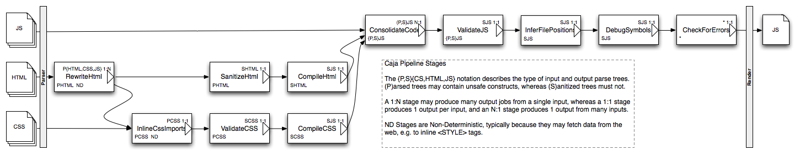

Caja — Securing WebApps
http://code.google.com/p/google-caja/Goal: A fundamentally secure foundation for Web Apps that runs in existing browsers and is usable by non security-experts.
Rewrites JavaScript/HTML/CSS
Enforces Object-Capabilities
Gadget writers use familiar tools
Security Goals
Gadget can't interfere with the container
Nor with other gadgets
But mutually suspicious gadgets can cooperate
And can be safely given user data
With restrictions
Target Audience
Not security experts
Familiar with web technologies
Comfortable with acronyms: JS, HTML, CSS, PHP
Have specific domain knowledge that C.S. graduates lack
Sandboxes → Playgrounds

Old: untrusted code in separate domains. Collaboration is hard.
New: different pieces of code in same domain. Don't trust each other. Collaborate via normal object passing and method calls.
Object-Capabilities
An O.C. Language is an OO language that ensures:
- Objects are encapsulated — only accessed via public API.
- Objects can only influence the outside world by sending messages on references.
- An object's creator can deny access by not providing references.
O.C. Builds on Good SW Practices
| Separation of Duties | → | Separation of Authority |
| Information hiding | → | Encapsulation |
| Object orientation | → | Capabilities |
| Dependency Injection | → | Authority Injection |
POLA (Principle of Least Authority) |
O.C. Provides Flexible Security
Static policies require blanket rules. O.C. allows exceptions by granting references.
A policy, safe HTML, can be enforced by a sanitizer function that returns an HTML capability. But an exemption can be made for HTML from a trusted source by passing in a reference to an HTML capability.
Independent of authentication and identity issues.
Demo: LOLcat Search

Two cooperating gadgets:
Displays a search form and uses a search engine provided by the container to fetch and display results.
When a search result is clicked on, displays pictures of cute kittens using the search engine supplied by the container.
Extensible Rewriting (http://tinyurl.com/2xr5t8)

JS & CSS extracted
<script src="searchbox.js"></script> <link rel=stylesheet href="searchbox.css" /> <form> <input type=text size=60 name=q> <input type=button value=Search onclick="doSearch(this)"> </form>
Javascript from script and onclick handlers extracted and sanitized. HTML rendered by javascript:
___OUTERS___.emitHtml___('<form onsubmit=\"return false\">\n' + ' <input type=\"text\" size=\"60\" name=\"q\">\n' + ' <input type=\"button\" value=\"Search\"' + ' onclick=\"return plugin_dispatchEvent___(…)\">\n' + ' </form>');
Style Rules & IDs rewritten
To prevent CSS styles interfering, classes, ids, and CSS rules are rewritten, and styles are sanitized:
/* searchbox.css */
#results li { list-style-type: none; margin-top: .5em;
border-bottom: 1px dotted #888 }
↓
/* searchbox-cajoled.css */
.searchbox #:results li {
list-style-type: none;
margin-top: .5em;
border-bottom: 1px dotted #888
}
Caja Rewrites Javascript
Global references rewritten, and libraries are "tamed".
// Gadget Javascript document.getElementById('foo')↓
// Cajoled Javascript
___OUTERS___.document…
When the gadget asks for the node with id foo we
substitute a "tamed" version of the DOM node with id
searchbox-foo.
Container Loads Gadgets
<!-- Container HTML --> <div id="searchbox-base" class="searchbox"></div> … <div class="searchbox"><ul id="searchbox-results"></ul></div> <script type="text/javascript"> // Create a fake "Global" object for the gadget var searchBoxOuters = ___.copy(___.sharedOuters); // Create the fake document object. attachDocumentStubs('searchbox-', searchBoxOuters); setGadgetRoot(document.getElementById('searchbox-base')); … </script> <!-- Load the gadget JS & CSS --> <script type="text/javascript" src=searchbox-cajoled.js></script> <link rel="stylesheet" type="text/css" href="searchbox-cajoled.css">
Container Injects Authority
var searchEngine = new SearchEngine(); // Provide both modules an interface to Google's AJAX Search APIs. searchBoxOuters.searchEngine = kittensOuters.searchEngine = searchEngine; // Allow searchBoxOuters to talk to kittens. searchBoxOuters.resultConsumer = kittensOuters.showKitten;
The searchBoxOuters is the fake "global" scope
created for that gadget, so
searchBoxOuters.searchEngine is available to the
gadget as searchEngine.
Now the Gadgets can search the web.
Status as of 23 Feb 2008
Language Specification Solid
Prototype Cajoler Implemented
Prototype Tamed DOM
Integrated w/ Shindig
MySpace developer launch imminent
Only Minimal Penetration Testing